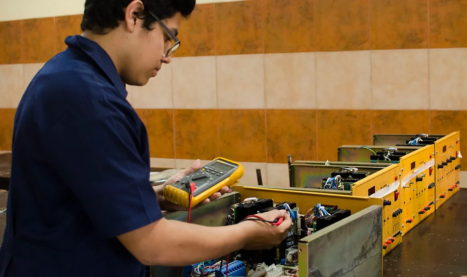

| Mecanica Automotriz | Electricidad Industrial | Electgronica Industrial | Informatica |
|---|---|---|---|

|

|
 |

|
|
Persona con formación integral, conocimientos, habilidades y destrezas competitivas para desmontar, desarmar, diagnosticar, reparar sistemas auxiliares, motor de combustión interna a gasolina sistemas eléctricos y de control electrónico según especificaciones de los fabricantes, que garantizan el óptimo funcionamiento de los vehículos automotrices. Además es competente para incorporarse a la educación superior principalmente en carreras de ingeniería, industrial, mecánica, eléctrica y electrónica.s |
Es una persona con formación integral, competente para desempeñarse con éxito en la instalación, montaje, mantenimiento, diagnóstico y reparación de circuitos para instalaciones eléctricas de baja tensión, acometidas eléctricas, generadores eléctricos monofásicos y trifásicos, transferencias manuales y automáticas, transformadores eléctricos, control y mando de motores, circuitos automáticos para procesos industriales con controladores lógicos programables, variadores de frecuencias para el control de la velocidad de motores eléctricos de corriente alterna, cableado y configuración de redes LAN, aplicando normas vigentes de instalaciones, calidad y seguridad para garantizar su buen funcionamiento. | Es una persona capaz de desempeñar labores en el área de automatización, reparación de aparatos electrónicos, diseño de circuitos de amplificación y regulación de señales; instala circuitos neumáticos e hidráulicos, configura PLC’s para control de procesos y da mantenimiento a equipo electrónico de nivel industrial, principalmente en procesos de automatización. El técnico evidencia su compromiso y responsabilidad en cada tarea asignada, cumpliendo en todo momento las normas de seguridad. | Persona con formación integral, conocimientos, habilidades y destrezas competitivas para el diseño y manejo de software de cualquier área, lo cual lo capacita para laborar en cualquier empresa con un sistema de cómputo en el que se maneje diversidad de información. Asimismo, estará en capacidad de manejar redes de información e Internet. Será una persona caracterizada por una serie de virtudes que harán la diferencia en cuanto a la calidad de su trabajo y trato personal. Por aparte, tendrá el nivel académico que le permita optar a cualquier carrera de nivel superior en el campo de la informática, especialmente Ingeniería en Sistemas, Licenciatura en Informática y otras afines. |